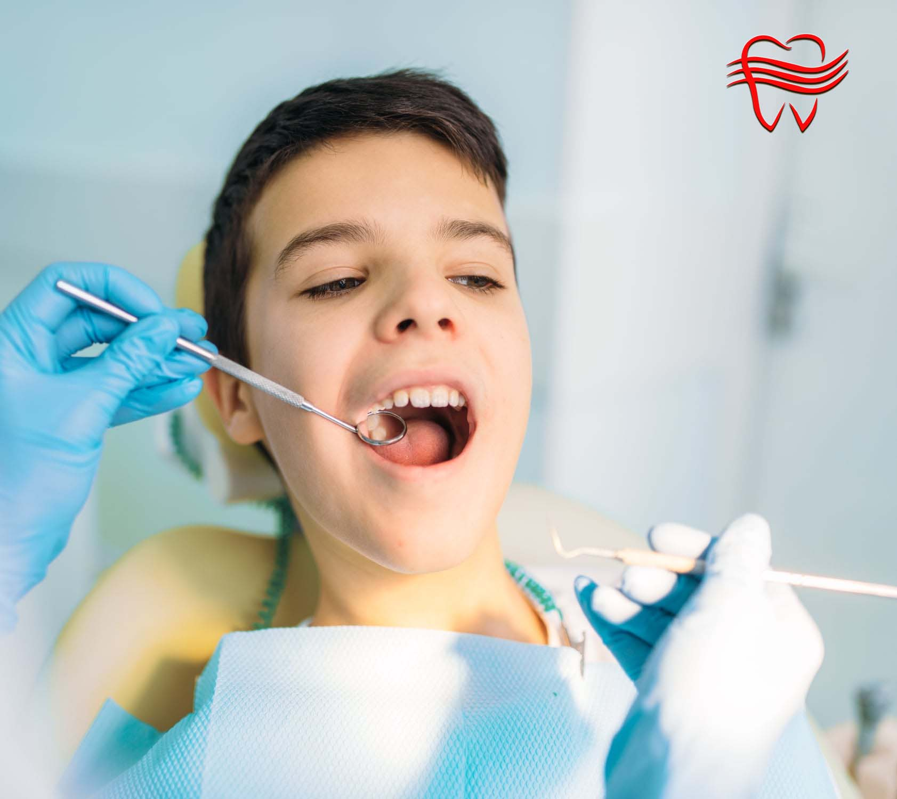
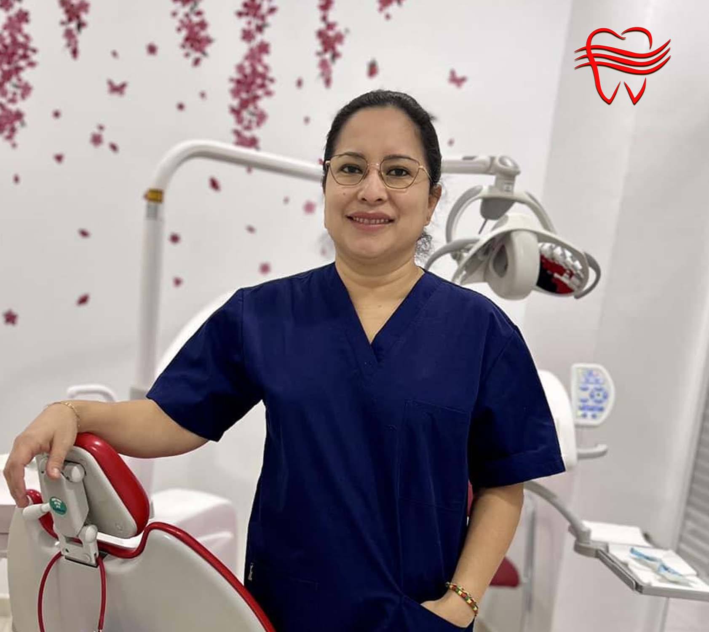

Consejos Profesionales
Errores Comunes en la Higiene Dental que Debes Evitar
Muchas personas cometen estos errores sin darse cuenta. Descubre cuáles son y cómo mejorar tu rutina diaria.

El cepillado solo limpia el 60% de la superficie dental. El hilo dental es esencial para eliminar residuos y bacterias entre los dientes donde el cepillo no llega.
✓ Solución: Usa hilo dental al menos una vez al día, preferiblemente antes del cepillado nocturno.
Enjuagarse inmediatamente después del cepillado elimina el flúor protector que debe permanecer en contacto con los dientes.
✓ Solución: Escupe el exceso de pasta pero no enjuagues con agua después del cepillado. Si usas enjuague bucal, hazlo en otro momento del día.
Prácticas que debemos eliminar de nuestra rutina
Después de consumir alimentos ácidos, el esmalte se debilita temporalmente. Cepillarse inmediatamente puede dañarlo.
Recomendación: Espera al menos 30 minutos después de comer para cepillarte, especialmente tras consumir alimentos ácidos.
El uso incorrecto de palillos puede dañar las encías y crear espacios entre los dientes donde se acumulan bacterias.
Recomendación: Opta por el hilo dental o cepillos interdentales recomendados por tu dentista en lugar de palillos.
La lengua alberga numerosas bacterias que pueden causar mal aliento y contribuir a problemas bucales.
Recomendación: Limpia tu lengua suavemente con un limpiador lingual o con la parte posterior del cepillo dental diariamente.
El 90% de los adultos comete al menos 3 de estos errores en su rutina de higiene dental diaria.
Corregir estos hábitos puede mejorar significativamente tu salud bucal en tan solo 2 semanas.

"La mayoría de los problemas dentales que veo en mi consulta podrían evitarse con una correcta técnica de cepillado y el uso adecuado de los productos de higiene oral. Pequeños cambios en tu rutina diaria pueden marcar una gran diferencia en tu salud bucal a largo plazo."